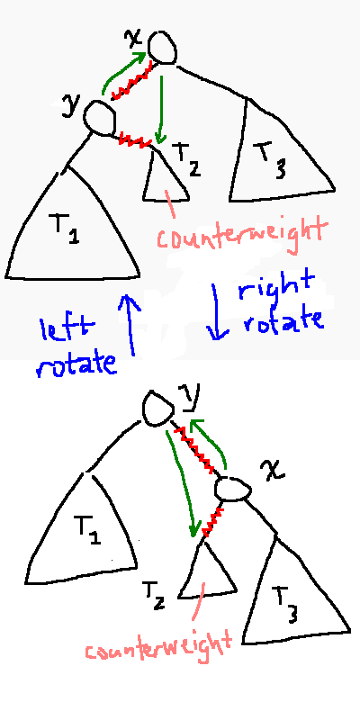
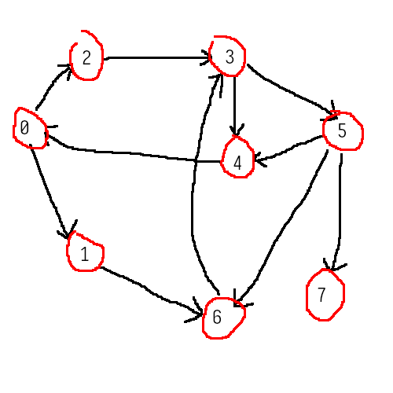

each node of a (doubly) linked list has
there's also a pointer head pointing to the start
of the list, and likewise for tail pointing to the
end
class Node {
public:
int data;
Node *prev;
Node *next;
};
tail insert / push_back(x)
Node *tmp; tmp = new Node; tmp->data = x; // (*tmp).data = x; tail->next = tmp; tmp->prev = tail; tmp->next = nullptr; tail = tmp;
head remove / pop_front()
Node *tmp; tmp = head; head = head->next; delete tmp; // deällocate head->prev = nullptr;
swap, assuming pointers i and j
Node *i_left = i->prev; Node *i_right = i->next; Node *j_left = j->prev; Node *j_right = j->next; i_left->next = j; i_right->prev = j; j_left->next = i; j_right->prev = i; i->prev = j_left; j->prev = i_left; i->next = j_right; j->next = i_right; Node *t = i; i = j; j = t;
we could also just swap the datas
to measure time we can
time on linux to get the amount of real
time (not super useful)
\(g(n) = O(f(n))\)
iff \(g(n) ≤ cf(n)\) for some \(c > 0\) and \(n ≥ n₀ > 0\)
| complexity | notation |
|---|---|
| constant | \(O(1)\) |
| logarithmic | \(O(\log n)\) |
| linear | \(O(n)\) |
| polylogarithmic | \(O(\logᵏ n)\) |
| quadratic | \(O(n²)\) |
| exponential | \(O(aⁿ), a > 1\) |
examples
big O gives an upper bound
\(g(n) = Ω(f(n))\)
iff \(g(n) ≥ cf(n)\) for some \(c > 0\) and \(n ≥ nₒ > 0\)
big omega is a lower bound
examples
\(g(n) = Θ(f(n))\)
iff \(g(n) = O(f(n))\) and \(g(n) = Ω(f(n))\)
examples
for time complexity the log base doesn't matter. even though in Real Math \(\log x = \log₁₀ x\) or \(\ln x\) depending who you ask
\(\logₐ n = Θ(\log n)\) regardless of \(a\)
\[\logₐ n = \frac{\log_b n}{\log_b a}\]
\[\lim_{n → ∞} \frac{g(n)}{f(n)}\]
this could
l'hôpital's rule says
\[ \lim_{n → ∞} \frac{g(x)}{f(x)} = \lim_{n → ∞} \frac{g'(n)}{f'(n)} = ⋯ \]
eg does \(n² + 33n + 2 = O(n)\)?
using normal math: \[ \lim_{n → ∞} \frac{n² + 33n + 2}n = \lim_{n → ∞} \left(n + 33 + \frac2n\right) = ∞ \]
using l'hopital's: \[ \lim_{n → ∞} \frac{n² + 33n + 2}n = \lim_{n → ∞} (2n + 33) = ∞ \]
therefore \(n\) is not an upper bound for \(n² + 33n + 2\)
does \(\sqrt n = O(\log n)\)?
\[ \lim_{n → ∞} \frac{\sqrt n}{\ln n} = \lim_{n → ∞} \frac n{2 \sqrt n} = \lim_{n → ∞} \frac{\sqrt n}2 = ∞ \]
no
logs are very nice for runtime
// a : array
// n : size
// s : searchee
bool find(int a[], int n, int s) {
for (int i = 0; i < n; i++) // O(n)
if (a[i] == s) // O(1) //
return true; // //
return false;
}
worst case, s isn't in the array at all.
\(O(n)\), \(Ω(n)\), \(Θ(n)\)
best case, s == a[0]
\(O(1)\), \(Ω(1)\), \(Θ(1)\)
average case, s is in the middle
\(O(n)\), \(Ω(n)\), \(Θ(n)\)
bool find(int a[], int n, int s) {
int l = 0;
int r = n - 1;
int m;
while (l <= r) {
m = l + (r - l) / 2; // O(1)
if (a[m] == s) //
return true; //
if (a[m] < s) //
l = m + 1; //
else //
r = m - 1; //
}
return false;
}
worst case, s isn't in the array at all
\(O(\log n)\), \(Ω(\log n)\), \(Θ(\log n)\)
for (int i = 0; i < n; i += 3) cout << "...";
\( \frac13 ∑\limitsᵢ₌₀ⁿ⁻¹ 1 = \frac n3 = Θ(n) \)
the counter updater bit is a big clue as to the complexity
for (int i = n; i > 0; i /= 2) cout << ...;
for (int i = 1; i < n; i *= 2) cout << ...;
these are both \(\log₂ n = Θ(\log n)\)
for (int i = 0; i < n; i++)
for (int j = 0; j < n; j++)
cout << ...;
\( ∑\limitsᵢ₌₀ⁿ⁻¹ ∑\limitsⱼ₌₀ⁿ⁻¹ 1 = ∑\limitsᵢ₌₀ⁿ⁻¹ n = n² = Θ(n²) \)
for (int i = 0; i < n; i++)
for (int j = 0; j < i; j++)
cout << ...;
\( ∑\limitsᵢ₌₀ⁿ⁻¹ ∑\limitsⱼ₌₀ⁱ⁻¹ 1 = ∑\limitsᵢ₌₀ⁿ⁻¹ i = \frac n2 (n - 1) = \frac{n²}2 - \frac n2 = Θ(n²) \)
for (int i = 0; i < n; i++)
for (int j = 1; j < n; j *= 2)
cout << ...;
\(Θ(n\log n)\)
for (int i = 0; i < n; i++)
for (int j = 1; j < i; j *= 2)
cout << ...;
since \(\log 0\) is undefined we can cheat and do \( ∑\limitsᵢ₌₁ⁿ \log₂ i = \log₂(n!) \)
but \(\log₂(n!)\) isn't v useful
the log base doesn't matter so \[ ∑ᵢ₌₁ⁿ \ln n ≈ ∫₁ⁿ \ln x \;\mathrm d x = \left.(x \ln n - x)\vphantom∫\right|₁ⁿ = n \ln n - n + 1 = Θ(n \log n) \]
void insertionSort(int a[], int n) {
for (int i = 1; i < n; i++) {
int key = a[i];
int j = i - 1;
while (j >= 0 && a[j] > key) {
a[j + 1] = a[j];
j--;
}
a[j + 1] = key;
}
}
after every iteration of the outer loop, the slice of the array from
0
to
i - 1
is always sorted
the inner loop makes room for the key to be inserted
worst case, the list of reversed and j has to go
all the way to -1 every time
this is a nice \(\frac n2 (n - 2)\) situation, so it's \(Θ(n²)\). not great
best case, it's already sorted and the inner loop never runs
then it's just \(Θ(n)\)
'divide and conquer' algorithm, which unfortunately necessitates recursion
mergeSort each half to get two
sorted half arrays
void mergeSort(int a[], int l, int r) {
if (l >= r)
return;
int m = l + (r - l) / 2;
mergeSort(a, l, m);
mergeSort(a, m + 1, r);
merge(a, l, m, r);
}
void merge(int a[], int l, int m, int r) {
int i = l, j = m + 1, k = 0;
int b[r - l + 1];
while (i <= m ** j <= r)
if (a[i] <= a[j])
b[k++] = a[j++];
while (i <= m)
b[k++] = a[i++];
while (j <= r)
b[k++] = a[j++];
for (int x = 0; x < r - l + 1; x++)
a[l + x] = b[x];
}
merging all the arrays at a given level together is \(Θ(n)\), and there are around \(\log₂ n\) levels
which means it's better than insertion sort!
another recursive one
quickSort on each side
int partition(int a[], int l, int r) {
int pivot = a[l]; // easy
int i = l + 1, j = r;
while (i <= j) {
while (a[i] < pivot) i++;
while (a[j] > pivot) j--;
// if i and j both didn't move
// swap a[i++] and a[j--]
}
return j;
}
worst case, the list is already sorted: \(O(n²)\)
best case the pivot is the median: \(O(n\log n)\)
methods to avoid worst case:
honestly not very useful in and of themselves
we have a root pointer that points to a node, sort of analagous to the head of a linked list
a
b --'-- c
d -'- e f -'- g
class BinTreeNode {
public:
int data;
BinTreeNode* left;
BinTreeNode* right;
}
more recursion! base case is the tree being empty. recursive case is a node where left and right point to a smaller binary tree
there are a couple different ways to traverse a tree
void preorder(BinTreeNode* r) {
if (r == nullptr)
return;
cout << data; // preorder process
preorder(r->left);
preorder(r->right);
}
void postorder(BinTreeNode* r) {
if (r == nullptr)
return;
postorder(r->left);
postorder(r->right);
cout << data;
}
binTreeNode* find(binTreeNode* r, int s) {
if (!r || r->data == s) return r;
binTreeNode* left = find(r->left, s);
if (left) return left;
return find(r->right, s);
}
runtime for pre/post order:
each function body runs \(Θ(1)\) times, and there are \(n\) nodes
levels are 0 indexed <55555555
a
'- b
'- c
'- d
the height of this tree is 3 and there are 4 nodes. this is the best case despite the tree looking absolutely fucking stupid
a
b ------'------ c
d --'-- e f --'-- g
h -'- i j -'- k l -'- m n -'- o
this has \(h\) levels and \(n = 2ʰ⁺¹ - 1\) nodes. now we can solve for h: \[ \begin{align*} 2ʰ⁺¹ - 1 & = n\\ h + 1 & = \log₂ n\\ h & = \log₂ n - 1 = O(\log n) \end{align*} \]
a bit like having folders!
template <class K, class V>
class BinTreeNode {
public:
K key;
V value;
BinTreeNode<K, V>* left;
BinTreeNode<K, V>* right;
}
for each node \(r\):
r->left's key is less than r's keyr->right's key is larger than r's key
template <class K, class V>
bool find(BinTreeNode<K, V>* r, K k) {
if (r == nullptr) return false;
if (k == r->key) return true;
if (k < r->key)
return find(r->left, k);
return find(r->right, k);
}
the function body is constant time. for here we only have to check one node per height level at most
best case the runtime is \(Θ(\log n)\) if the tree is perfectly balanced. worst case it's \(O(n)\) if it's perfectly unbalanced
the insertion order determines the height of the tree
so the question is can we have the tree balance itself?
this is a self-balancing binary search tree. when we insert or delete we balance the tree if needed
how do we know if a tree is balanced? for each node the difference in its left and right subtree heights cannot exceed 1
this requires adding a size_t height into BinTreeNode
the empty tree has a height of -1. for every node \(r\) its height is \( \max( r\mathord→\mathrm{left}\mathord→\mathrm{height}, r\mathord→\mathrm{right}\mathord→\mathrm{height} ) + 1 \)
to fix imbalanced trees we can rotate them

if the tree still isn't balanced, via a zigzag, we need to double rotate instead. we perform an intermediate rotation on one of the subtrees to align the tree
eg inserting \([75, 50, 90, 40, 60, 100, 55, 65, 52]\)
runtime!
worst case, for each node except the leaves, the difference of its left and right subtree heights will be exactly 1: \[ \begin{align*} N(h) & = N(h - 1) + N(h - 2) + 1\\ N(-1) & = 0\\ h & ≈ \sqrt 2 \, \log₂ n = O(\log n) \end{align*} \]
stl has a type called Map for an ordered map, which is basically an
avl tree
#include <map>
using std::map;
int main() {
map<string, int> people;
people["Dan"] = 13;
people.insert({"Tom", 12});
}
ways to do stuff to every element:
// `it` is a map<string, int>::iterator
for (auto it = people.begin(); it != people.end(); it++) {
// first = key, second = value
cout << first second << endl;
}
// `it` is the actual node object
for (auto it: people) {
cout << it.first << ":" << it.second << endl;
}
unordered_map, uses a hash table instead of a tree
insert and find are \(O(1)\)!
map.find(key) returns an iterator pointing to the item with some key, or
map.end()
if it's not found.
vector<string> names = {"evie", "luci", "violet", "matt", "evie", "luci", "luci"};
unordered_map<string, int> condensed;
for (auto name: names)
condensed[name] = condensed[name] + 1;
for (auto uniq: condensed) {
cout << uniq.first;
if (uniq.second > 1)
cout << " [duplicates]";
cout << endl;
}
we maintain a very large table and have a hash function that helps us locate elements in the table
\[ h(\text{key}) \mathbin{𝗆𝗈𝖽} \text{table capacity} → \text{index} \]
this takes constant time!
properties of hash functions and maps:
suppose the parking lot is a hashmap from student id to parking spot. you get to your assigned parking spot and a car is already there. now what you'd like to do is just stack the cars, right. or you can try to park somewhere else
when a collision occurs, we stack the elements at the location. so we need to maintain an array of linked lists. aaaaaaa
we also want to know the load factor \(α = \frac n{\text{table capacity}}\) which tells us how full the table is
template <class K, class V>
class HashMap {
private:
class Node {
public:
K key;
V value;
Node *link;
};
size_t capacity;
size_t items;
Node **table;
size_t h(K k);
public:
HashMap() {
items = 0;
capacity = 5;
table = new Node*[capacity];
for (size_t i = 0; i < capacity; i++)
table[i] = nullptr;
}
void insert(K k, V v) {
size_t index = h(k) % capacity;
for (Node *i = table[index]; i != nullptr; i = i->link)
if (i->key == k)
return;
// insert a new Node into table[index]
items++;
}
bool find(K k) {
size_t index = h(k) % capacity;
for (Node *i = table[index]; i != nullptr; i = i->link)
if (i->key == k)
return true;
return false;
}
};
hashing takes constant time. it does scale to the length of the key, but not the table. \(𝗆𝗈𝖽\) is also constant time. so computing the index is \(O(1)\)
it is expected that table[index] has zero or few nodes. so searching this also doesn't depend on table size
the tradeoff is you need a very big sparse table to minimize collision risk (capacity \(⋙\) items), and most of the locations will be empty
the worst-but-very-unlikely case is everything gets mapped to the same index. we can fix this by resizing the table when the load factor becomes too high
if we have a collision, we try a different location. a simple version is called linear probing. to compute the index,
\[ \text{index} = \left((h(\text{key}) \mathbin{𝗆𝗈𝖽} \text{capacity}) + i\right) \mathbin{𝗆𝗈𝖽} \text{capacity} \]
\(i\) is the collision counter, starting at 0.
template <class K, class V>
class HashMap {
private:
class Node {
public:
K key;
V value;
// no link!
};
size_t capacity;
size_t items;
Node **table;
size_t h(K k);
public:
HashMap() {
capacity = 10;
items = 0;
table = new Node*[capacity];
for (int i = 0; i < capacity; i++)
table[i] = nullptr;
}
void insert(K k, V v) {
size_t index = h(k) % capacity;
size_t i = 0;
if (table[index] == nullptr) {
table[index] = new Node();
table[index]->key = k;
table[index]->value = v;
items++;
return;
}
if (table[index]->key == k)
return;
i++;
index = (index + 1) % capacity;
// loop
}
V getValue(K k) {
size_t index = h(k) % capacity;
size_t i = 0;
if (table[index] == nullptr)
return V(); // meh whatever
if (table[index]->key == k)
return table[index]->value;
i++;
index = (index + 1) % capacity;
// loop
}
};
constant again! ideally, we're not supposed to do any linear probing
deleting nodes might cause issues because the indices depend on how many conflicts there are. we can solve this with orange traffic cones
for separate chaining we can just find the matching node and delete it
for open addressing, we need to mark the node "deleted" with some flag, or put a dummy node there
the cs202 method to resize stuff is making a bigger thing and copying everything over. that's not gonna work here because the indices depend on the table size. we need to re-insert all the elements
we perform a resize when, say, \(α ≥ 20\%\). we don't remap the traffic cone entries
for (int i = 0; i < old_capacity; i++)
if (old_table[i] != nullptr)
this->insert(old_table[i]->key, old_table[i]->value);
// deallocate each node of old_table
// deallocate old_table
resizing is \(O(n)\)! scary! everything else is constant time! so we want to resize as infrequently as possible
(tangent: procrastination is ok dont feel bad about it)
| separate chaining | open addressing |
|---|---|
| easy to maintain | many ways to handle collisions |
| few ways to handle collisions | more complex to maintain |
| hashmap | avl tree | |
|---|---|---|
expected runtime for insert/find |
\(Θ(1)\) | \(Θ(\log n)\) |
| space needed | way more than \(n\). mostly empty! | enough for all the \(n\) nodes |
uses a binary min heap which is like a binary tree that we squish into an array. a binary min heap is valid if each node's priority value is \(≤\) that of both its children
3
7 ---'--- 5
8 -'- 10 6 -'- 12
11 -'
gets listified as
[, 3, 7, 5, 8, 10, 6, 12, 11, ]
the first element is empty! the root node is at index 1. for each element at index \(i\), the left child is at index \(2i\),the right child is at \(2i + 1\), and the parent is at index \(\left⌊\frac i2\right⌋\)
\(⌊ a/b⌋\) is integer division of \(a\) and \(b\)
here the capacity is 9 and the heap size is 8
template <class K, class P>
class PriorityQ {
private:
class PriorityType {
public:
K key;
P priority;
};
size_t capacity;
size_t heapsize;
PriorityType *heap;
unordered_map<K, size_t> key2index;
size_t bubbleUp(size_t);
size_t bubbleDown(size_t);
public:
PriorityQ() {
heapSize = 0;
capacity = 10;
heap = new PriorityType[capacity + 1];
}
void pushBack(K k, P p) {
// resize heap if needed
heap[heapSize + 1].key = k;
heap[heapSize + 1].priority = p;
heapSize++;
bubbleUp(heapSize);
}
}
heapSize + 1 takes \(O(1)\)bubbleUp does
so pushBack is \(Θ(\log n)\)
updating:
heap[key2index[...]].priority = ...;
template <class K, class P>
class PriorityQ {
// ...
public:
void popFront() {
heap[1] = heap[heapSize];
heapSize--;
bubbleDown(1);
}
};
popFront is also \(Θ(\log n)\)
a graph \(G\) is a pair of
it's a directed graph if \(E\) is instead a set of tuples \((vᵢ, vⱼ)\)

for this graph, \[ \begin{align*} V &= \set{0, 1, 2, 3, 4, 5, 6, 7}\\ E &= \set{(0, 1), (0, 2), (1, 6), (2, 3), (3, 4), (3, 5), (4, 0), (5, 6), (5, 7), (6, 3)} \end{align*} \]
a graph is connected if between any two nodes there is a path between them, and unconnected if not
a graph is sparse if "it doesn't have many edges": \(e = Θ(v)\). if \(\#E = Θ\left(v²\right)\) it's dense
there are two ways to store a graph
adjacency matrix\[ \begin{bmatrix} - & 1 & 1 & 0 & 0 & 0 & 0 & 0\\ 0 & - & 0 & 0 & 0 & 0 & 1 & 0\\ 0 & 0 & - & 1 & 0 & 0 & 0 & 0\\ 0 & 0 & 0 & - & 1 & 1 & 0 & 0\\ 1 & 0 & 0 & 0 & - & 0 & 0 & 0\\ 0 & 0 & 0 & 0 & 1 & - & 1 & 1\\ 0 & 0 & 0 & 1 & 0 & 0 & - & 0\\ 0 & 0 & 0 & 0 & 0 & 0 & 0 & - \end{bmatrix} \]
this is like pre/post order traversal but for graphs
when you arrive at a node, pick a neighbor (doesn't matter which) and go there. if there's a dead end, back up to the last node you were at and try a different neighbor
void dfs(
int current,
vector<list<int>> adjlist,
vector<bool> &visited,
vector<int> &predecessors
) {
if (visited[current])
return;
visited[current] = true;
cout << current << endl; // preorder
for (int neighbor: adjlist[current])
if (!visited[neighbor]) {
predecessors[neighbor] = current;
dfs(neighbor, adjlist, visited, predecessors);
}
return; // or postorder
}
int main() {
int v;
cin >> v;
vector<int> visited(v);
vector<int> predecessors(v);
vector<list<int>> adjlist(v);
for (int i = 0; i < v; i++)
dfs(i, adjlist, visited, predecessors);
return 0;
}
dfs will not find very good paths and is \(Θ(e + v) = Θ(e)\). can you🫵 see why?
wheee no recursion! finds all of the shortest paths between two nodes
since there's no recursion here we need a fifo queue to track what nodes we've looked at
void bfs(int s, int v, vector<list<int>> adjlist) {
vector<int> predecessors(v);
vector<bool> visited(v);
queue<int> bfsq;
visited[s] = true;
bfsq.push_back(s);
while (!bfsq.empty()) {
int x = bfsq.front();
bfsq.pop_front();
cout << x << endl;
for (int y: adjlist[x])
if (!visited[y]) {
visited[y] = true;
predecessors[y] = x;
bfsq.push_back(y);
}
}
}
int main() {
int v;
cin >> v;
vector<list<int>> adjlist;
bfs(0, adjlist);
return 0;
}
putting each node on the queue takes \(Θ(e)\) time and examining each neighbor takes \(Θ(e)\) time. so bfs is also \(Θ(e)\)
here we are given a graph with weights. and we do bfs on it!
dijkstra(s, adjlist)
init pq
init π array
init w array with ∞ for each element
push s.0 onto the pq
while pq is not empty
pop x.v off the queue
for each neighbor y of x
relax(x, y, π, pq)
relax(x, y, π, pq)
if x.v + edgeweight(x, y) < y.v
y.v = x.v + edgeweight(x, y)
π[y] = x
update y in the pq
if there are any negative edge weights, dijkstra's doesn't work, because it is too greedy. even worse are negative cycles because then the weight to get everywhere is \(-∞\) and nothing can solve that
runtime depends on how we implement the priority queue.
also greedy. but what's a minimum spanning tree?
we have a predecessor array used to determine the leader of a group
fn find(x) {leader[x] == x ? return x : return leader[x] = find(leader[x])} // compresses the path
fn union(x, y) {
if x is in the bigger group
leader[y] = leader[x];
else
leader[x] = leader[y];
}
given a set \(E\) of weighted undirected edges
this is \(O(e \log v)\) for some reason